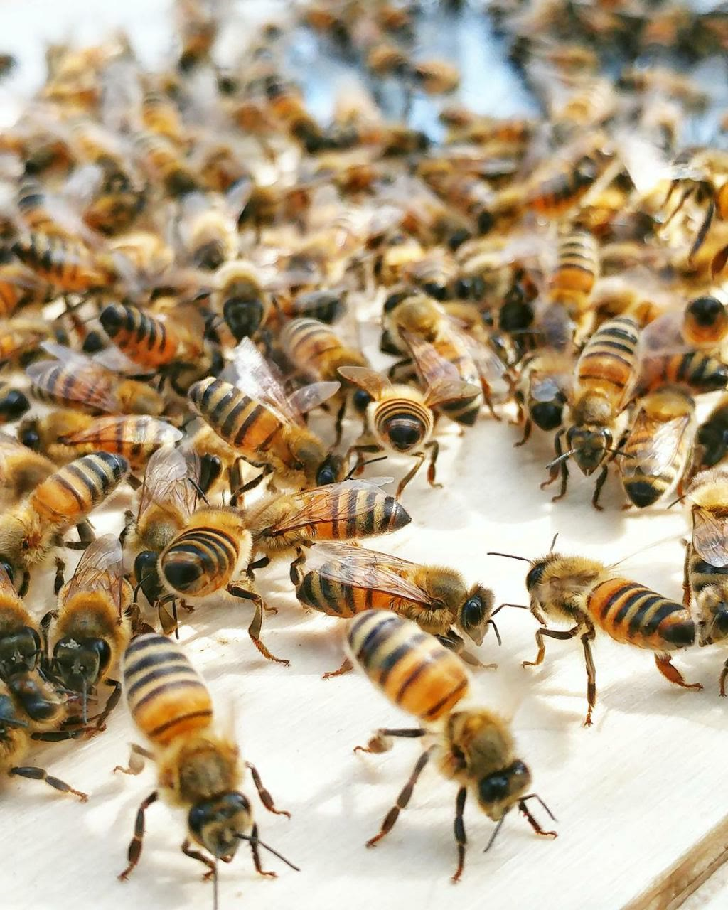
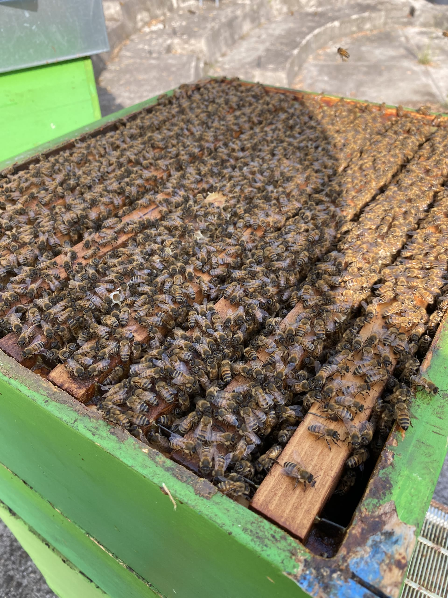
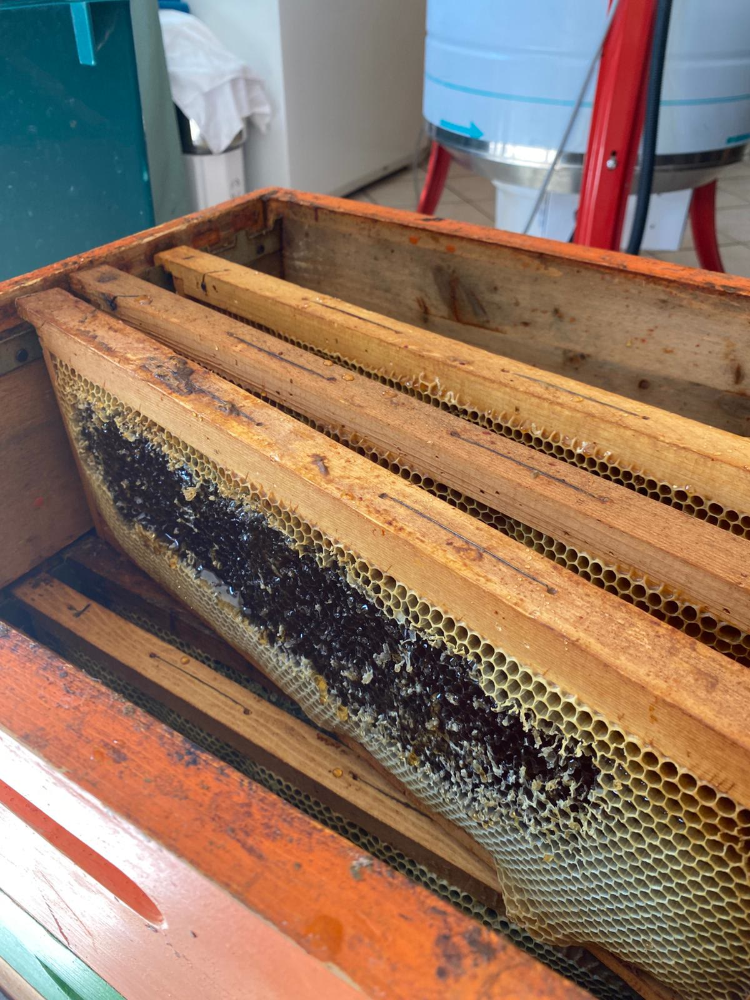
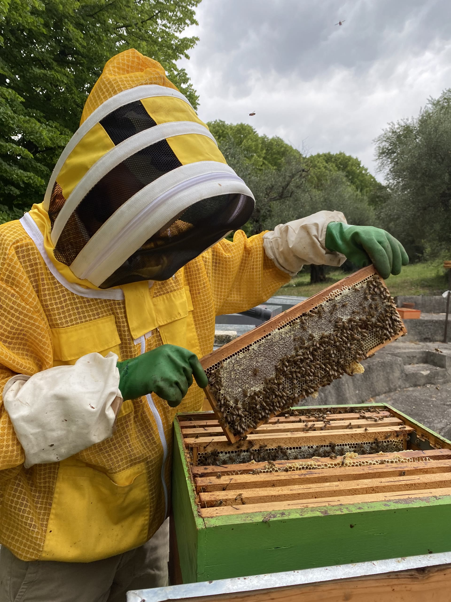
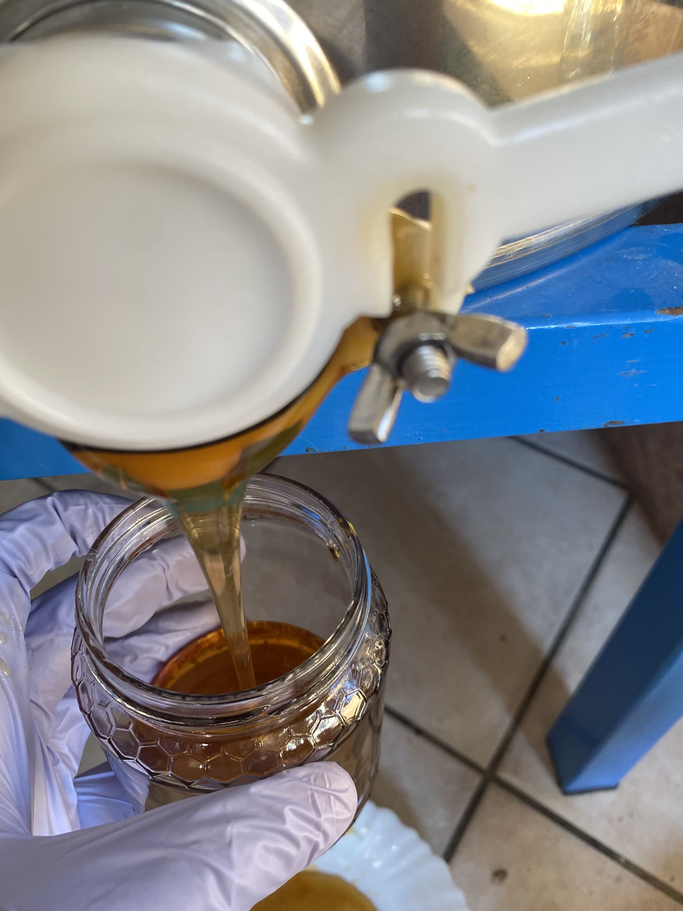
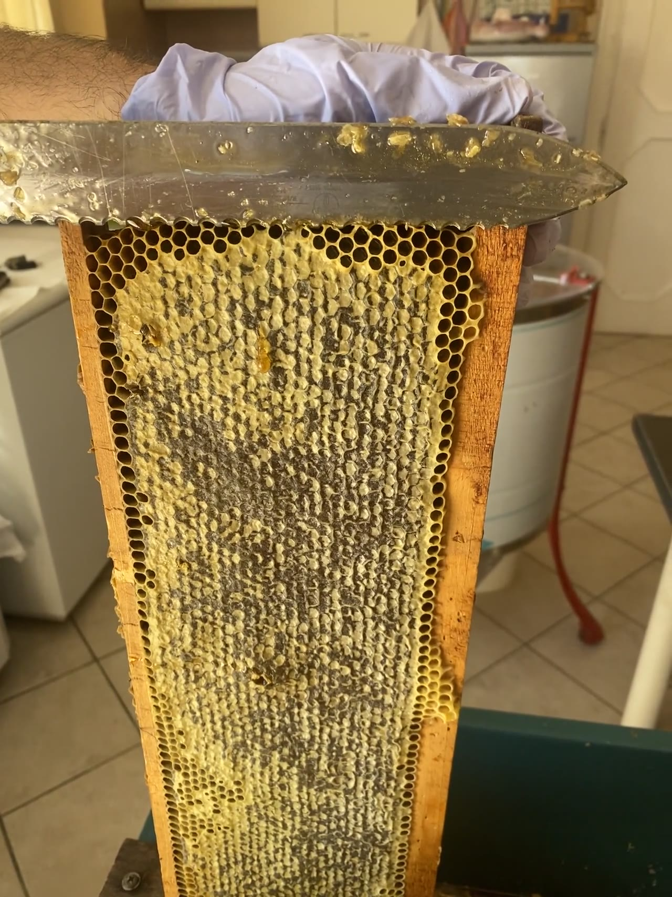
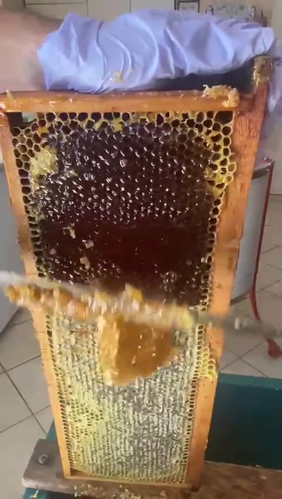

Miele artigianale di alta montagna, raccolto a 1.290 metri nel cuore del Parco Naturale Regionale dell'Umbria.
Scopri il viaggio
Un'ape operaia percorre fino a 5 km, visitando 1.500 fiori in un solo viaggio. Sul Monte Subasio trova narcisi, orchidee, lavanda e trifoglio — una biodiversità unica al mondo.

Ogni fiore del Subasio produce un nettare diverso. Altitudine, suolo, microclima e biodiversità creano profili aromatici irripetibili.
Dentro l'arnia, 60.000 api trasformano il nettare in miele. Lo disidratano, vi aggiungono enzimi, lo sigillano con cera. Un processo biologico preciso che dura settimane.

Fruttosio, glucosio, enzimi, flavonoidi. Una sinfonia chimica di oltre 200 composti — antiossidanti, antibatterici, energizzanti — che nessun laboratorio sa replicare.
Filtrazione a freddo. Nessun riscaldamento oltre 37°C. Nessun additivo. Dal fiore al vasetto, ogni goccia porta in sé la purezza di un ecosistema protetto.
Dal 1987, la famiglia Rossi coltiva le proprie arnie sulle pendici del Monte Subasio, nel cuore del Parco Naturale Regionale dell'Umbria. Un mestiere antico trasmesso di padre in figlio, fatto di rispetto per la natura e pazienza per i suoi ritmi.

5 km di volo, 1.500 fiori al giorno, tra orchidee, narcisi e lavanda selvatica del Subasio.
60.000 api disidratano il nettare, aggiungono enzimi, lo sigillano con cera. Settimane di lavoro biologico preciso.
Solo favi opercolati, abbondanti scorte invernali alle api. Mai forzature, mai compromessi.

Nessun riscaldamento oltre 37°C. Nessun additivo. Il miele arriva intatto, vivo, esattamente com'era nell'arnia.

Il miele del Subasio è una sinfonia molecolare di oltre 200 composti. Nessun laboratorio al mondo sa replicarla.
Zucchero principale. Dolcezza intensa, fonte di energia immediata
C₆H₁₂O₆Favorisce la cristallizzazione naturale. Energia pronta per muscoli e cervello
C₆H₁₂O₆Umidità sotto il 18%: conservazione senza limiti, naturalmente sterile
H₂ODiastasi, invertasi, flavonoidi. Antiossidanti e antibatterici naturali
200+ composti bioattiviProfumo floreale complesso con note di lavanda, trifoglio e maggiorana selvatica. Colore ambrato dorato, consistenza cremosa.
Cristallino, quasi trasparente, di rara delicatezza. Non cristallizza, si conserva anni. Il profilo più fine dell'apicoltura italiana.

Scuro, intenso, amaro in chiusura. Eccezionale con formaggi stagionati, salumi, carni rosse. Tra i mieli più ricchi di antiossidanti.
Ogni scatto è stato girato direttamente in apiario. Non c'è alcuna messa in scena — vedrai il nostro lavoro esattamente come accade ogni giorno.
"L'acacia è semplicemente straordinaria. Non avevo mai assaggiato nulla di così pulito e delicato. Lo ordino ogni due mesi."
— Martina R. · Milano"Il castagno con i formaggi stagionati è un'esperienza che non dimentichi. Lo racconto a chiunque venga a cena da me."
— Lorenzo B. · Roma"Ho regalato il cofanetto ai miei suoceri per Natale. Sono rimasti senza parole. La confezione è elegante quanto il prodotto."
— Sara F. · PerugiaSpedizioni in tutta Italia · Confezioni regalo disponibili.
Invia il messaggio